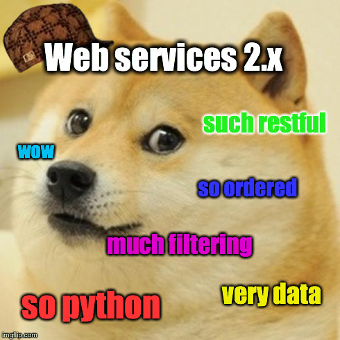
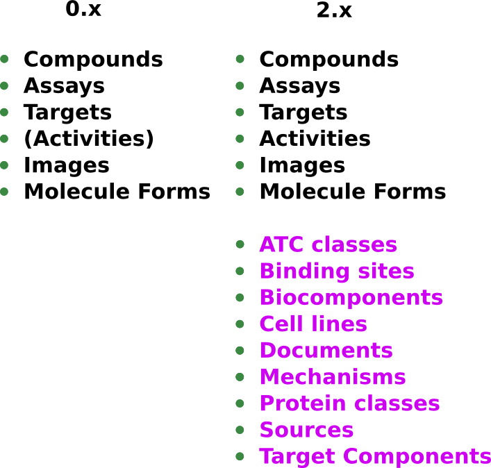
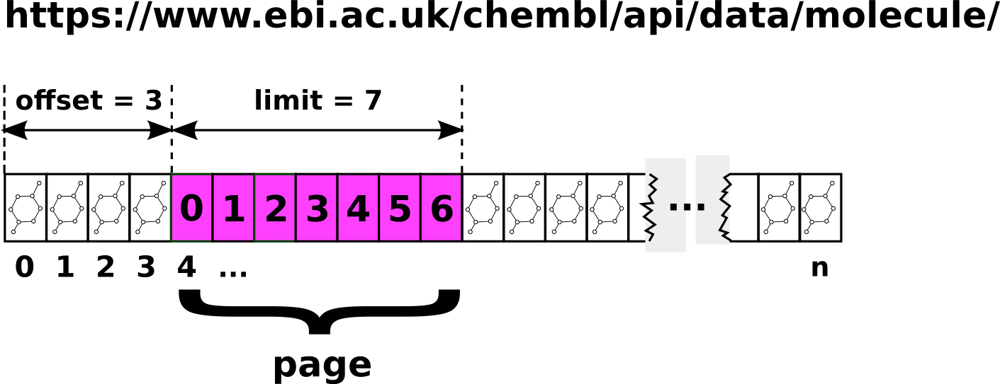
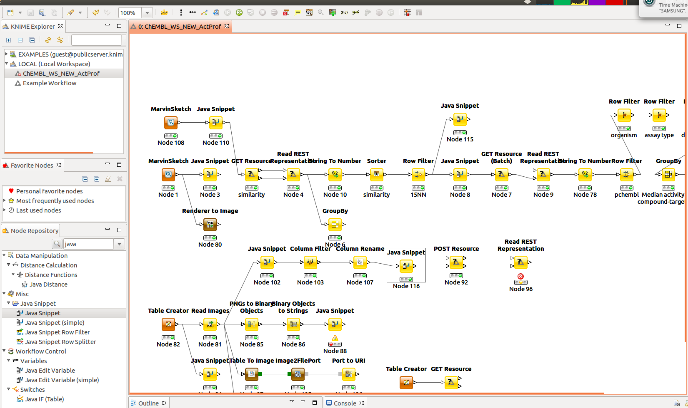
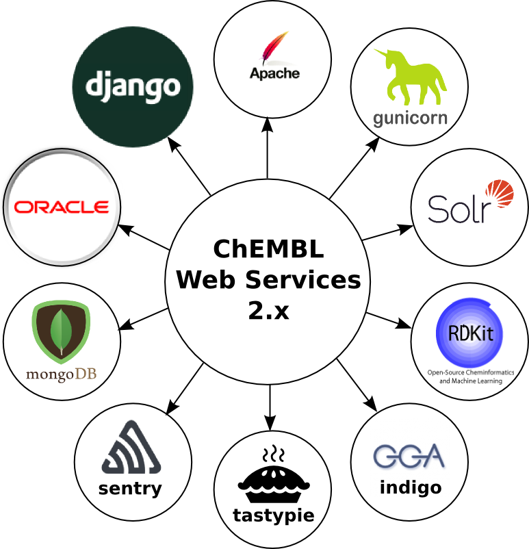
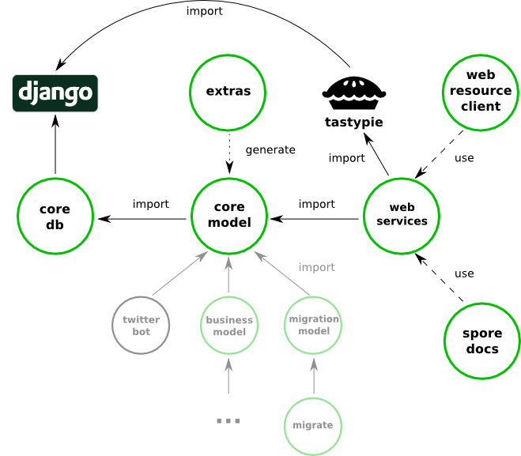
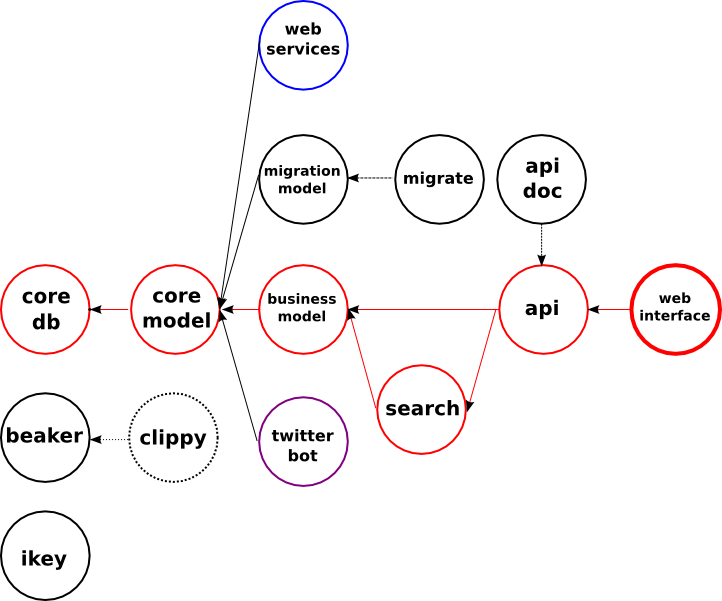
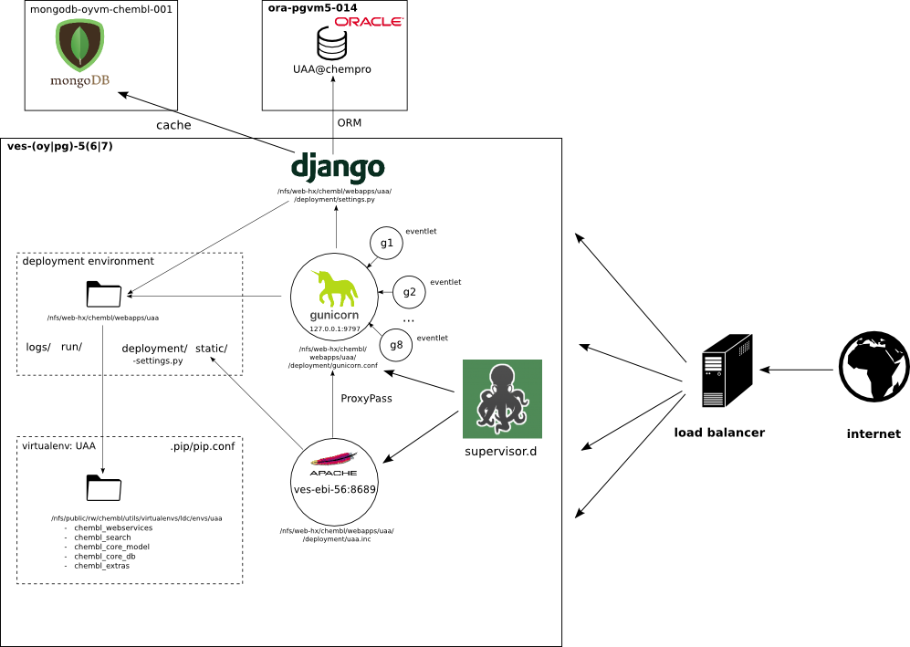

ChEMBL
Web Services
version 2.x
Michał Nowotka
ChEMBL Group
EMBL-EBI
What's new?
- More resources
- Better (more RESTful design)
- Pagination
- Filtering
- Ordering
- Improved client
- Beaker integration
- Vector images
What's new?

Resources

Pagination

Pagination
Filtering
Select all approved drugs:
molecule?max_phase=4
Select all approved drugs with two or more aromatic rings:
molecule?max_phase=4&molecule_properties__aromatic_rings__gte=2
Select all targets with name starting from 'serotonin':
target?pref_name__istartswith=serotonin
Ordering
Order molecules by weight, ascending:
molecule?order_by=molecule_properties__full_mwt
Order molecules by weight, descending:
molecule?molecule_properties__isnull=false&order_by=-molecule_properties__full_mwt
Order by aromatic rings ascending and then by weight descending:
molecule?order_by=molecule_properties__aromatic_rings&order_by=-molecule_properties__full_mwt
Intergration with Beaker

KNIME integration
"KNIME and REST: A dream team for Life Sciences Discovery Informatics"

Python client
- Hides all network interaction
- Kind of RPC
- Tons of syntactic sugar
- Lazy eavluation based on Django's QuerySet
- Client-side caching
Python client
molecule.get(['CHEMBL6498', 'CHEMBL6499', 'CHEMBL6505'])
molecule.filter(molecule_properties__acd_logp__gte=1.9)
.filter(molecule_properties__aromatic_rings__lte=3)
.filter(chirality=(-1))
.exists()
mol = utils.smiles2ctab("[Na]OC(=O)c1ccccc1")
br = utils.breakbonds(mol)
fingerprints = utils.sdf2fps(mol)
- No makefiles
- Tons of syntactic sugar
- No heavy FTP downloads
- How cool is that?
Javascript "Client"
- Data live documentation: https://www.ebi.ac.uk/chembl/api/data/docs
- Services (Beaker) live documentation https://www.ebi.ac.uk/chembl/api/utils/docs
- JS widgets (to be done)
Getting raster images from JS
Getting vector images from JS
Vector graphics can be animated!
Easter egg!
More RESTful?
Better GET support
- SMILES can contain non-url safe characters: [Na+].CO[C@@H](CCC#C\C=C/CCCC(C)CCCCC=C)C(=O)[O-]
- This wont work: https://www.ebi.ac.uk/chemblws/compounds/smiles/[Na+].CO[C@@H](CCC#C\C=C/CCCC(C)CCCCC=C)C(=O)[O-]
- But this will: https://www.ebi.ac.uk/chembl/api/data/molecule/[Na+].CO[C@@H](CCC%23C\C=C/CCCC(C)CCCCC=C)C(=O)[O-]
GET or POST?
- Dropbox team: limitations of the get method in http
- Dropbox starts using POST, and why this is poor API design.
"I really like how the Google Translate API handles this issue[1].
The actual HTTP method can be POST, but the intended HTTP
method must always be GET (using the "X-HTTP-Method-Override" header)."
https://cloud.google.com/translate/v2/using_rest#WorkingResults
Other ideas
- Chemical flashcards
- Chemspider-like (or better) interfaces
- Drag and Drop OSRA
- In browser Clippy
- Mobile app
- Data Tables
Other ideas
JsPlumb for web based KNIME-like experience.
Technologies used

Software dependencies

Software dependencies

Deployment infrastructure

Future improvements
- Solr-based search
- BLAST
- Widgets gallery
- JSON-LD support
Other info
- Source and issue tracker: https://github.com/chembl/chembl_webservices_2
- ChEMBL Web Services: Streamlining Access to Drug Discovery Data and Utilities - submitted to NAR
- ChEMBL Beaker: A Lightweight Web Framework Providing Robust and Extensible Cheminformatics Services - Challenges
- chembiohub - SGC Oxford
- vernalis.com
- Lots of blog posts but lots more needed
Thank you!
Questions?